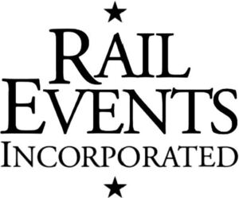

Trade Mark Journal No.2025/043 24 October 2025
WO0000001866808 (35,41)
Office of origin: United States of America
Date of International Registration:30 January 2025
Date of designation in the UK:
30 January 2025

The mark consists of the stylized wording RAIL EVENTS INCORPORATED stacked on top of each other with a star above and a star below.
International priority date claimed: 21 August 2024
(United States of America)
(98709654)
- Class 35
- Advertising, marketing and promotion services in the field of railway events; advertising, marketing and promotion services; arranging and conducting special events for business purposes; event marketing; promoting the parties and special events of others; promoting public awareness of trains, railroads and railway history by coordinating licensed special events, event promotions, merchandising, and related activities with railway and museum operators; promotion and marketing services and related consulting; promotional advertising of products and services of third parties through sponsoring arrangements and license agreements relating to railway events; providing marketing and promotion of special events; special event planning for business purposes; special event planning for commercial, promotional or advertising purposes; merchandising.
- Class 41
- Arranging and conducting special events for social entertainment purposes; arranging, organizing, conducting, and hosting social entertainment events; consultation in the field of special event planning for social entertainment purposes; entertainment in the nature of theater productions; entertainment services, namely, coordinating licensed special events, event promotions and related activities to railroad and museum operators; entertainment services, namely, providing live theatrical performances on trains; entertainment services in the nature of arranging, organizing, conducting, and hosting live theatrical performances on trains; entertainment services in the nature of organizing and conducting holiday-themed festivals featuring live theatrical performances; entertainment services in the nature of production of live events for parties and special events for social entertainment purposes; entertainment services in the nature of organizing social entertainment events; hosting social entertainment events, namely, licensed rail-related special events for others; live musical theater performances; organizing and hosting of rail-related events; organization of entertainment events in the nature of live theatrical performances; organization of social entertainment events; organization of social entertainment events for children and families; planning parties and special events for others; provision of information relating to theater productions; special event consultation and special event planning services, namely, licensed railroad events; special events management related to railroads, railways and trains; special event planning for social entertainment purposes; theatrical productions; event management services being organizing and conducting of live theatrical events; organizing, producing, promoting and conducting licensed special events in the nature of live theatrical performances; organizing, producing, promoting and conducting licensed train ride events.
Rail Events, Inc.
Representative: Eugene M. Pak Fennemore Wendel, 1111 Broadway, 24th Floor, Oakland CA 94607, UNITED STATES OF AMERICA